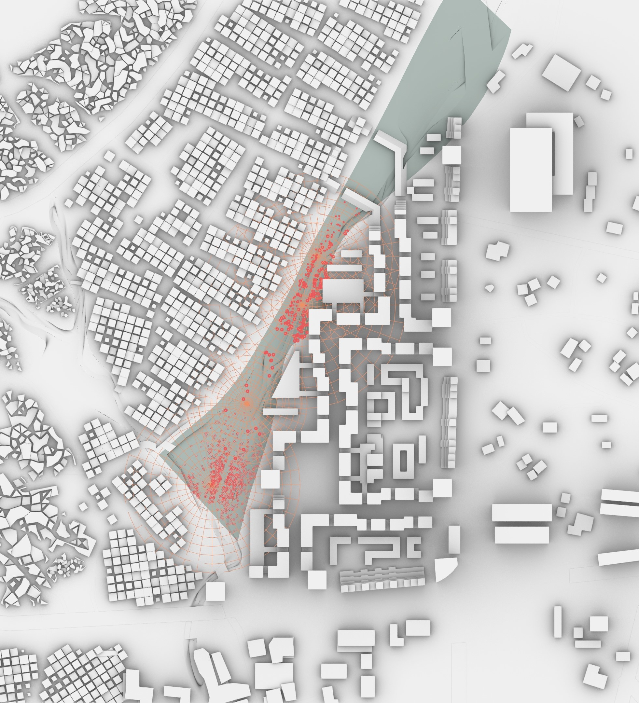
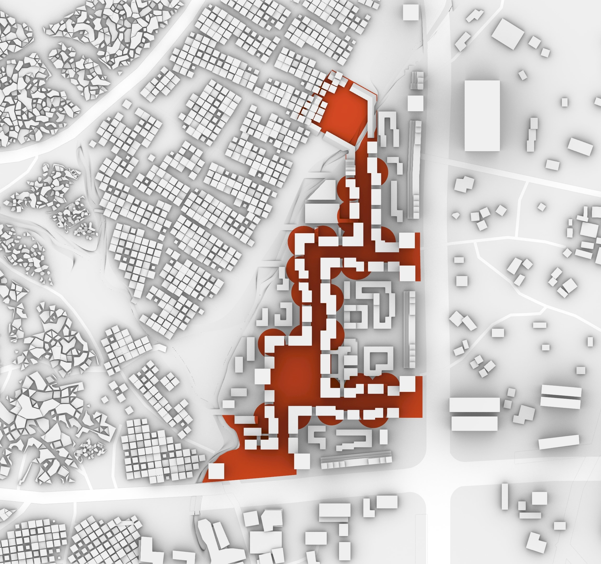
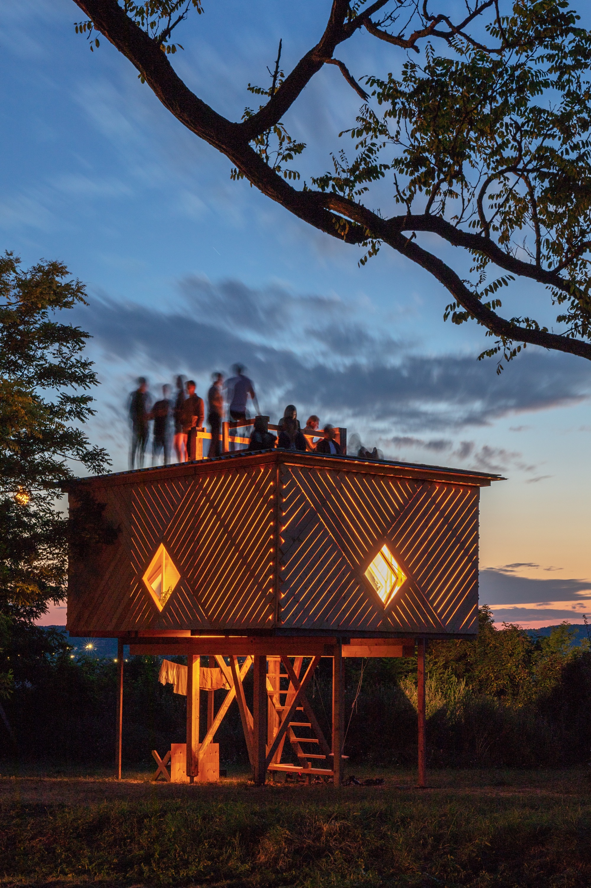

3 ▶ Positie
PROJECT TYPE scenic route LOCATION 53°02'46.2"N 06°27'25.6"E PHASE design & construction ROLE creator - builder STATUS built YEAR 2023
Building with concrete, building with steel. Glass windows, forever closed. However beautiful, skillful and creative, there is always something missing. For this project, I plunged in the relation with these, modern, industrial materials, and nature. In a festival that is created around the subject of a 'folly' (structure without purpose), a tree is growing right through a steel frame instead of staying seperated, the heavy frame is supported by a sphere made of cardboard layers, stacked right on top of eachother. The frame is representing the industrial, the tree the natural. The cardboard shows the folly of both, but also connects them. Can we break open our fortified cities of concrete, steel and glass? Can we invite some more nature in it, in our streets, plazas, our buildings, interiors, facades. In our lives. Can we embrace nature as part of our world, or do we have to endlessly polarize it, fighting it with toxides, and on the other hand neurotically maintaining it in exactly the shape and dimensions we want. Can we allow nature to take its space in the city? The object, a folly constructed of three elements, has been built and exhibited during the months of July and August 2023.


Datapolis - a deepsea datacenter infrastructure
PROJECT TYPE internet infrastructural development LOCATION 11°35'36.3"N 20°14'07.8"W PHASE research & design ROLE creator STATUS bundled YEAR 2020
In a team of three we conducted and developed a research and design project on internet infrastructure. The main theme of the project combines addressing the Digital Divide with the marine infrastructural components of the internet. The research highlights in specific those parts of the internet infrastructure that connect it to the world, the marine cables and landing architecture. The digital divide consists of a increasing inbalance between those who are connected to internet, and those who are not. The main factors for this divide, and for those areas that lack a good connection to the internet, the political unstability, the absence of a stable power source, and the connection of the area with the world via contemporary marine internet cables. The project tackles these issues with a single structure: located outside coastal areas in the politically neutral high-seas, generating sustainable energy via solar panels and tidal wave generators and including a datacenter which gives the area access to the internet. By building it underwater, it reduces the energy need for the datacenter and at the same can investigate the marine life around the datacenter pods.
Team: Julianne Guevara, Yanchen Wang & Rogier Tamminga Tutors: Negar Sanaan Bensi & Paul Cornet

On an Overgrown Path
REPERTOIRE Dvorak & Janacek CHOREOGRAPHY Samir Calixto DANCE Samir Calixto & Camilla Montesi ENSEMBLE de Formule YEAR 2019
Together with Samir Calixto, we made an integrated choreographical performance in which music and dance overlapped and intertwined. Musicians become dancers, dancers become musicians. The music constantly shifts from intense foreground to subtle support.
De Formule is a unique group of young artists that play classical music in a way you've never seen and heard before. Their courage and experimental nature resonates in their performances, where they present a wayward interpretation combined with influences of other art forms such as theatre, dance and text. De Formule has collaborated with choreographer and dancer Samir Calixto, director Kenza Koutchoukali, the European Chamber Music Academy, Festival Classique, Korzo, Harmos Festival Porto, Holland Festival and they are prize winners of 'De Grote Kamermuziek Prijs 2018'.

Temporality in the Urban
PROJECT TYPE urban temporality embracing housing system LOCATION Geja Sefer, Addis Ababa, Ethiopia PHASE research & design ROLE creator STATUS published YEAR 2021
In a fastly urbanising world, where cities
are more informal than formal, where
people live from density, passers-by,
temporality plays an important role.
Located in a neighbourhood of Addis
Ababa, capital city of Ethiopia, this
projects brings together this informal way
of living and dwelling with the qualities of
a formalised building system.
This graduation project is a result of
research into the life in cities across the
southern hempisphere, and in particular
Addis Ababa, and a design of a system
that incorporates this different way of
living. It dives into the informal parts of
a city in multiple aspects: living, dwelling,
working, socialising, shopping. It centers
around the single theme of temporality:
temporality as the keyword of this different
way of living. Understanding the opennes
of the system in all its complexity.
The design projects integrates temporality
and bridges the flexiblity of informality
with the quality control of a fixed building
system. In this building system, a wooden
glulam structure, people have the flexibility
to build their own space, decide what part
is indoor and outdoor, decide in what
extent there is need for space for income
generation. The system assures a high
density without isolating the people living
on the top floor, by extending the flow
of people to higher floors and reserving
space for activities, both economical and
social, on these higher floors, without
neglecting the vertical distance.
The project incorporates and extends on
important urban principles and studies like
Streets in the Sky (Smithson&Smithson),
public city life (Gehl), African urban
development (ao. Pieterse, Myers,
Schmid), urban informality (ao.
Lutzoni, Lombard, Streule), Torre David
(Brillembourg&Klumpner) and on a more
philosophical level the theories of Gilles
Deleuze and Felix Guattari.
Tutors: Harald Mooij, Nelson Mota & Vanessa Grossman


ensemble DE FORMULE
VIOLIN Coraline Groen VIOLIN Laura Lunansky VIOLA Michiel Wittink VIOLA Sofie van der Schalie CELLO Rogier Tamminga PIANO Rik Kuppen ENSEMBLE de Formule YEAR 2017-2022
De Formule is a unique group of young artists that play classical music in a way you've never seen and heard before. Their courage and experimental nature resonates in their performances, where they present a wayward interpretation combined with influences of other art forms such as theatre, dance and text. De Formule has collaborated with choreographer and dancer Samir Calixto, director Kenza Koutchoukali, the European Chamber Music Academy, Festival Classique, Korzo, Harmos Festival Porto, Holland Festival and they are prize winners of 'De Grote Kamermuziek Prijs 2018'.

Gevangen
REPERTOIRE Shostakovich DIRECTOR de Formule CINEMATOGRAPHY de Formule EDITING de Formule ENSEMBLE de Formule YEAR 2020
During COVID, with everything shut down, we decided to investigate our own basement and dive into our dream world. Some creepy things popped up!
De Formule is a unique group of young artists that play classical music in a way you've never seen and heard before. Their courage and experimental nature resonates in their performances, where they present a wayward interpretation combined with influences of other art forms such as theatre, dance and text. De Formule has collaborated with choreographer and dancer Samir Calixto, director Kenza Koutchoukali, the European Chamber Music Academy, Festival Classique, Korzo, Harmos Festival Porto, Holland Festival and they are prize winners of 'De Grote Kamermuziek Prijs 2018'.


The Green Dip
PROJECT TYPE green dipping urbanities LOCATION various PHASE research & design ROLE co-creator STATUS published YEAR 2019
In this studio of the Why Factory, led by Winy Maas, we dove into 'green dipping' cities with a team of over 30 students. There is an urgency for this green dipping: on a global scale it will absorb CO2 and therefore reduce the global warming.
More importantly: on city scale it can tackle clear and direct issues that cities deal with: reducing urban heat island effect, air polution, noise polution, creating a buffer for extreme weather, decrease the amount in which cities sink, and increase the starkly diminishing biodiversity.
Green dipping proves a benefit for all these issues: sometimes very clearly measurable, sometimes demonstrable through research.
The green dip offers a tool in which a part of the city, current or in development, can be radically greened. For each geometry, different strategies can be chosen, different elements attached, and a collection of plants can be added to the building.
The tool picks the right plants for the current biome automatically, regarding the different external factors like temperature, sun intensity, weather, watering, soil depth, and places the optimal plant on each spot.
The output is the 'green dipped' model, with a calculation of all the measurable benefits as well as the soft benefits, as showcased in the images, with a resulting fly-through example of four different green dipped cities over the world.
Tutors: Winy Maas, Javier Arpa Fernandez, Adrien Ravon, Leo Stuckardt, Lex te Loo

Gevangen in de Formule
REPERTOIRE Shostakovich - Piano Quintet DIRECTOR Kenza Koutchoukali DESIGN Vera Selhorst LIGHTING Teus van der Stelt ENSEMBLE de Formule YEAR 2019-2022
A show about loneliness and a search for your inner self, beaten up by ecstatic hysteria and depressive isolation. The music, from intense and melodic, to rigid and sticky. The pianist, face hidden at all times, is embodied by the four string players. He symbolizes all of us, unable to show ourselves. Can we remove the cloth or proves the price in showing vulnerability to be too high? This show was made in collaboration with director Kenza Koutchoukali, during the 'NJO muziekzomer'. We are very greatful for the support we received from the NJO in creating this performance.
De Formule is a unique group of young artists that play classical music in a way you've never seen and heard before. Their courage and experimental nature resonates in their performances, where they present a wayward interpretation combined with influences of other art forms such as theatre, dance and text. De Formule has collaborated with choreographer and dancer Samir Calixto, director Kenza Koutchoukali, the European Chamber Music Academy, Festival Classique, Korzo, Harmos Festival Porto, Holland Festival and they are prize winners of 'De Grote Kamermuziek Prijs 2018'.


I Am A Monument
PROJECT TYPE cabin LOCATION Csóromfölde, Hungary PHASE construction ROLE builder - creator STATUS built YEAR 2018
During nine days, together with a group of 13 people, we built a cabin in Csóromfölde, in rural Hungary. Since 2010, Hellowood has been organising festivals in the summer for students and professionals in architecture and design. The main design of this project was made by Josep Garriga and OfficeShophouse, but during the week, more and more was designed coöperatively by all the participants. This year's topic was Cabin Fever, in which all the proposals were based on building a small cabin, which is inhabitable all year long. The aim of this design, with the title I am a Monument, is to create this enclosed space lifted above the ground. At ground level it does not interfere with the nature, and on top it creates a beautiful rooftop terrace, which allows for wonderful views. It creates a platform for the people to stand on, rather than creating a monument, it facilitates the monument: the person standing on the roof. The project builds upon a previous project from a couple of years ago, and thus the structure was already present. This meant that during the process, a lot of alterations had to be made on the original design and thus gave freedom to us as a group to further develop and specify the design. A particular interesting part of the cabin are the interior walls and doors. In a subteam of three, we designed and built these walls in place. There was no existing design for these, since the basic design was altered during the process. The idea is to copy the outer frame structure and put the window in exactly the same location, so that it is possible to look straight through to the other side of the cabin and outside from sitting position. To keep the open character of the structure, but still give privacy to the inhabitants of the space, we used translucent polycarbonate for the wall as well as for the sliding doors. These doors can slide in front of the windows and therefore are able to alter the view through the window, as is showed in the picture at the bottom. One part of the cabin can be closed off with these doors and is insulated, the other side remains open and ventilated in such a way that the light can come through.
Photo credits: Tamas Bujnovsky

CitYard
PROJECT TYPE monumental factory redevelopment LOCATION Dordrecht, NL PHASE opening bid ROLE architectural design STATUS pending YEAR 2021
Cityard, a combination of different parties, aimes for a collective and mixed redevelopmant of the Biesboschhal, a machine factory built in 1917. Cityard is a collective proposal of 17 parties, invested in a range of activities evolving around and connecting inclusion, education and innovation: Autisme Experience Centre, Sity Youniversity and a multitude of start-ups and artists. The proposal highlights the monumental elements of the hall: structure, roof lights and volume are exaggerated. The smaller volume at the street side houses the entrance and the larger sized partners. The entrance is subtly opened up to make a connection with the surrounding environment and the other monumental buildings along the waterfront.
The main volume of the hall is kept intact: inside boxes are placed in which a variety of activities can take place. With a zoning scheme, parties that connect together are placed closest to eachother.
Along the whole length of the hall, a catwalk is installed in which the street side is connected with the waterfront. Along this catwalk, made from locally harvested wood, a historical overview of the place and factory is given. The waterside houses a small maritime museum with a terrace along the water.
The elements like the catwalk, but also an elevated gallery, tie the different zones together: the catwalk with the entrance, a start-up atrium at +1 with the hall, the Autism Experience Centre at +2 with an wide overview of all the life inside the hall.
RoosRos Architecten